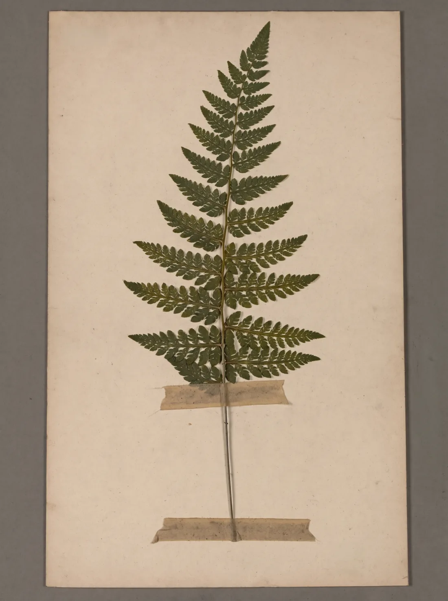
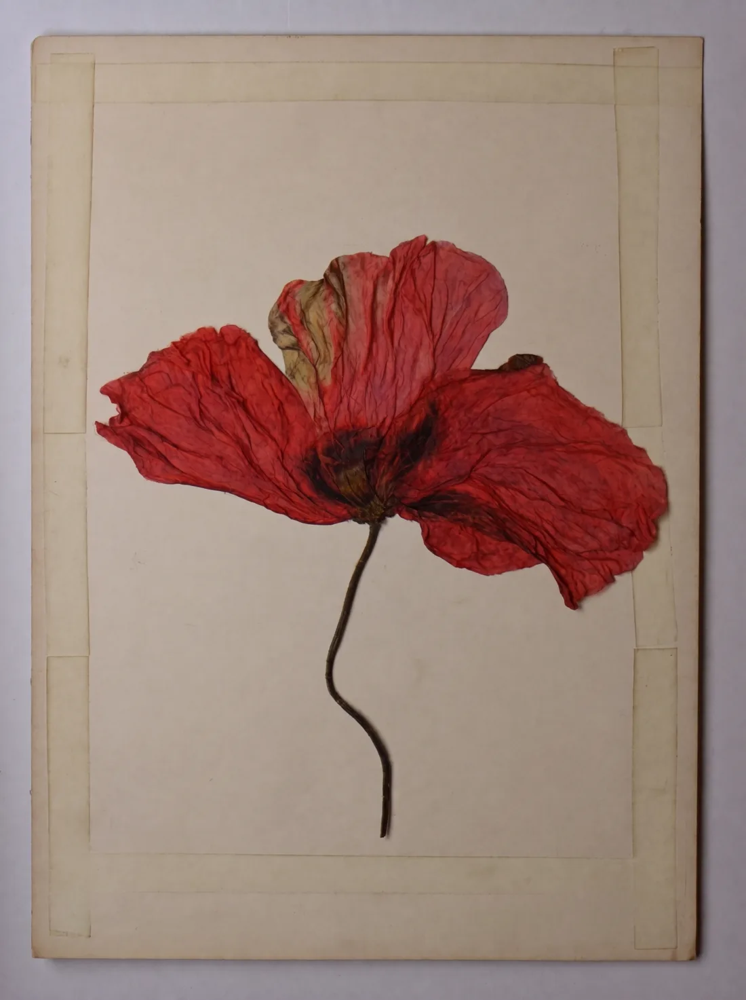
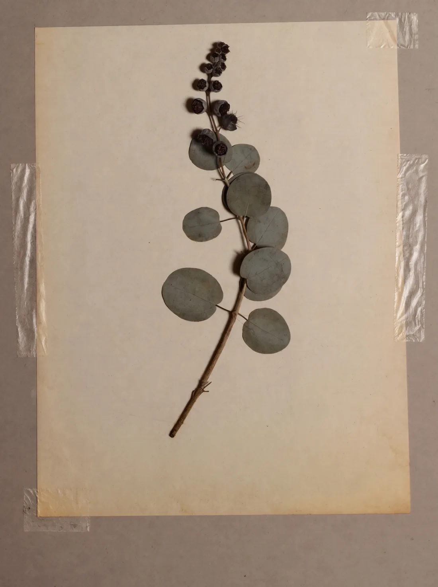
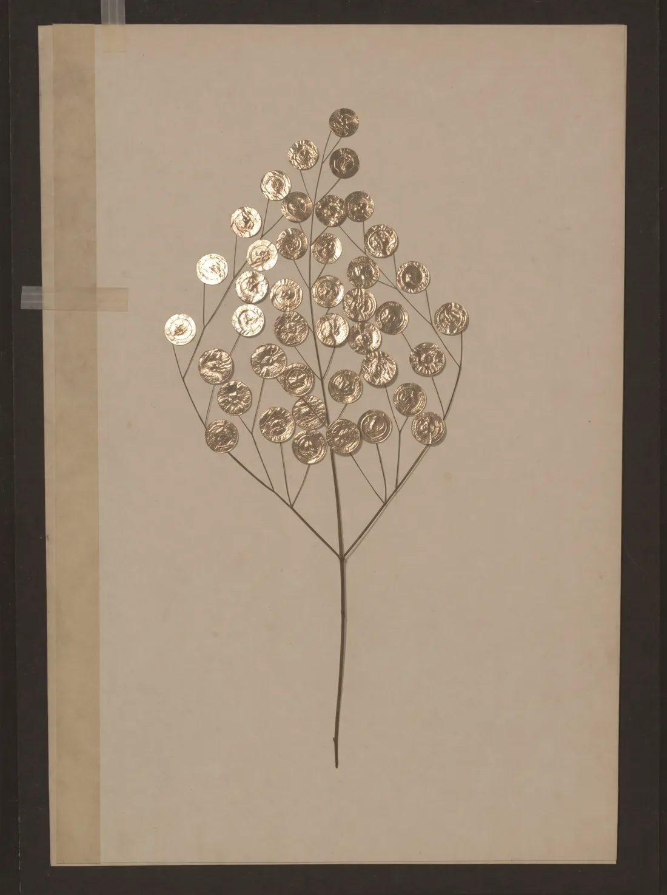

On the practice
A herbarium is the slowest photograph there is. You press an afternoon between blotting papers, weight it with dictionaries, and wait for the water — which is most of what a flower is — to leave. What remains is not the plant. It is the plant's signature, witnessed by tape.
DRAWER 9 · FULL CATALOGUE
| HP-091 | Dryopteris filix-mas | HELD ABOVE |
| HP-114 | Papaver rhoeas | HELD ABOVE |
| HP-137 | Convallaria majalis | LENT 1988 · NEVER RETURNED |
| HP-162 | Quercus robur (single leaf) | EATEN BY TIME (BEETLES) |
| HP-201 | Eucalyptus cinerea | HELD ABOVE |
| HP-238 | Lunaria annua | HELD ABOVE |
| HP-244 | Rosa canina | DISINTEGRATED UPON OPENING, 2003 |